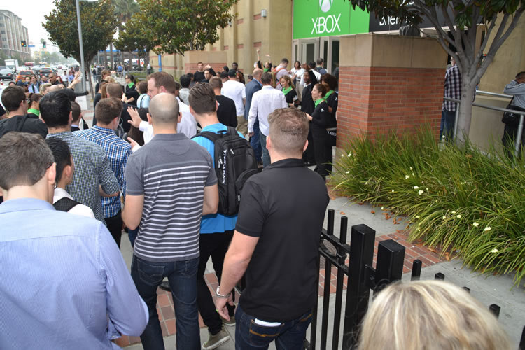
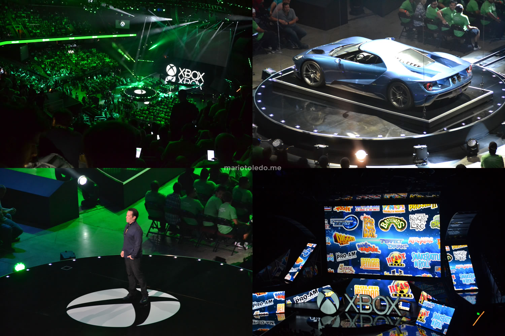
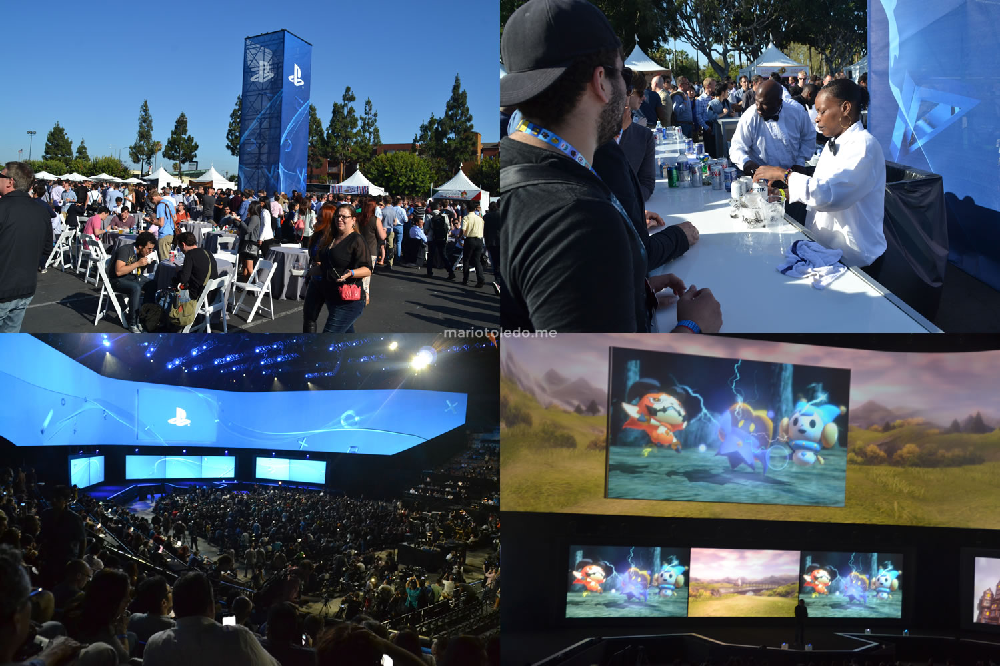
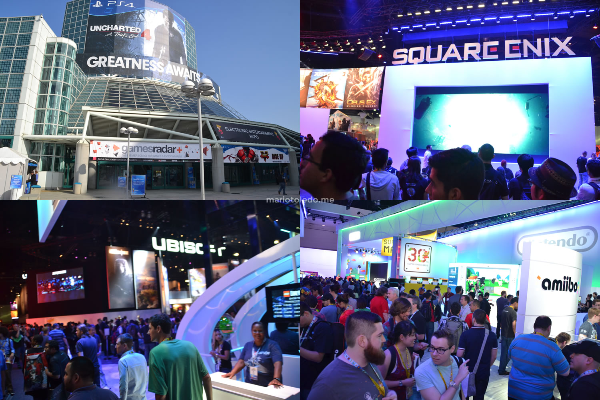
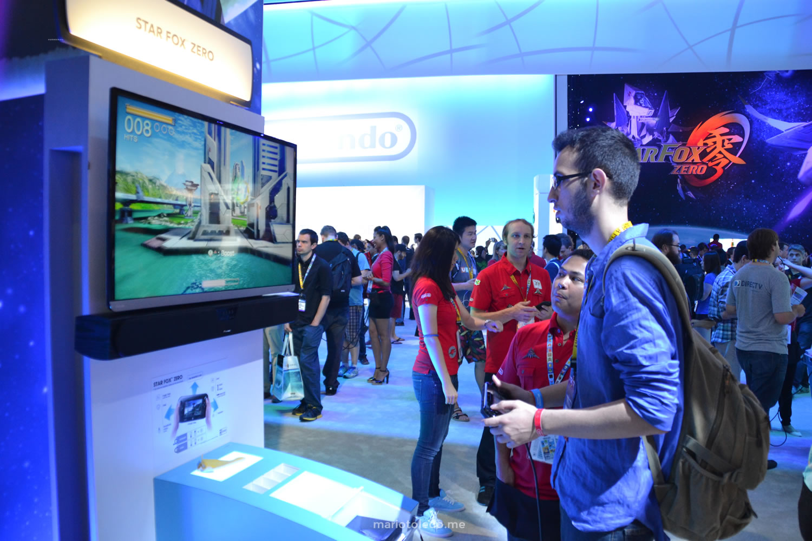
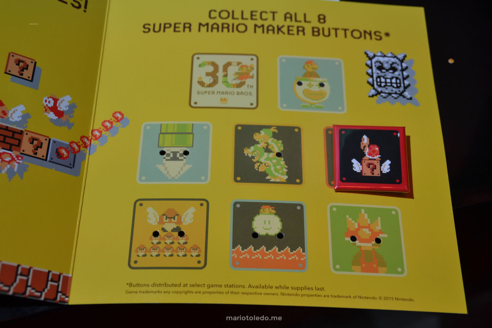
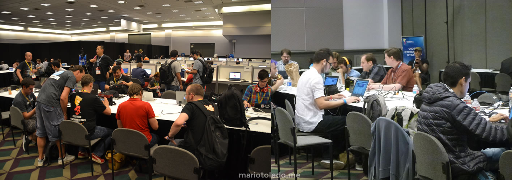

Mario Toledo
Mario Toledo
What I learned by going to E3
If you like video games, you know something about E3. Considered as the most important event for the video game industry, the Electronic Entertainment Expo is being held in Los Angeles since 1995 by the Entertainment Software Association. This is the place where developers, publishers and other manufacturers introduce their line-up of products to retailers, the press and, more recently, directly to the public.
I don't really remember the first time I watched an E3 conference, but I do have great experiences from watching them over the internet, and celebrating when a desired announcement was made. But more than that, I wished to be one of that journalists, that were in the middle of the live conference, covering the announcements and cheering with the reveals. In other words, I had a dream to be in E3.
In 2015, I finally went to E3, and had this so desired experience. After 6 years from this trip, and after the first digital version of the event, I decided to write everything that I learned by going to the expo. But just to make it clear: this is not a post about dreams that comes true, and more about the reality of E3 and the background of working as a game journalist.
A brief explanation of my experience as a content producer
As a game fan from Brazil, I grew up reading gaming magazines. They were a huge success in the 90's and 2000's, as we had (probably) more than 15 kinds of magazines to be bought. Being a game journalist was the closest job in the game industry that video games fans could think of, and most of them grew up with the idea to work in a video game magazine.
 Video game magazines from Brazil
Video game magazines from Brazil
With the upcoming of Web 2.0, users could create their on website really easily, and start writing their own stuff. As many video game fans had this dream to become journalists, a lot of video game websites were created since them.
In 2010, I joined DS-Party, and started to write Previews and Reviews for the website. We decided to move to N-Party, and the site grew as well. In 2011, I started to manage the whole website, adding routines like weekly planning meetings, content reviewing, people management and improving our content development as well. Most of our contributors were professional journalists or students, and we had an environment really close to a profesisonal editorial. We really grew as one of the most know websites about Nintendo content in Brazil, and had really good numbers for a gaming website.
Why did I decide to go to E3?
As N-Party grew as a reference for gaming fans, we also were neglected by many companies and even other professional (or bigger) websites. At the time, I used to adapt my routine to the content development, by waking up early, writing hard news, scheduling content for the day, managing social media, and trying to manage the website while working as a software developer. Besides all my effort, it was really hard to stand out when you have so many people producing content on the same time. Also, in 2015, YouTube and Social Networks already had a way bigger influence over content development. This was a constant anguish for me, because I strongly belived we had a great content produced by the best team we could have.
As I grew as a content producer, and started to meet profesional journalists, the idea of being in E3 grew in my mind from time to time. But going to E3 is not so easy as many people think: as a brazilian, of course that you need to have, at least, a visa and a passport, and I didn't have any of them (so far, I had never traveled outside São Paulo). Also, as many people don't know, you must register yourself as a journalist at E3 and be accepted as a media (at least in 2015). Finally, going from Brazil to Los Angeles is an expensive trip (currently, the average cost for the flight, hotel and food for the expo days would be R$ 7000 - something about U$ 1300).
It happens that I received an opportunity to join as a partner from the current company I was working to, and received the exact amount of money that I needed for the trip from my termination. In February, I signed the registration form on E3 website, and provided all necessary info (including links from our website and my latest contribution). After about 1 week of review, I received a positive response, also receving my digital badge and a visa letter to help my acceptance in the country. This helped me so much to ask for my passport and visa, as I had all necessary info to make sure that I was only going to Los Angeles to cover E3 and had all necessary money to do it.
I listened to some friends saying that, if they had the opportunity to go to E3, they would never go to work there. This is not something that has passed on my mind: I really wanted to go there to do the best I could, and have all the experience that E3 could offer me. For me, it was a "one in a lifetime" experience.
Of course that I was also afraid. That was my first international trip, I was going all by myself, and many things could go wrongly. Also, this money could fit some cultural productions I used to produce here, in Brazil. In May, I talked to a friend of mine that, in the time, was the editor for Nintendo World (an official Nintendo magazine from Brazil). He convinced me that going to E3 was an investment not only for me, but also for my website as well. Also, this could reflect in my future cultural productions, as I would learn how things worked outside Brazil and meet potencial stakeholders or other people. Finally, he was also going to E3, so he would give enough support to everything that I would have trouble with.
My trip to Los Angeles
You must have many assurances before going to another country from Brazil. Firstly, you need to make all necessary reservations. Also, you need to print all necessary documents, including trip planning, reservation confirmation and many other things that may help you during the immigration checkpoint. Also, you need to have at least another credit card (if the one you have does not works) and have cash money if everything goes wrong.
In my flight, I met a brazilian woman that was traveling to see her son's graduation on Los Angeles University. She told me that it was her first trip since her husband died, and asked if she could tag along as she was a bit scaried. I decided to help her and I almost got arrested as she had troubles during the immigration (she barely knew how to speak in English and needed to explain what she was going to do in Los Angeles). In exchange, she and her son gave me a ride to my hotel (and it was the first time I entered in a Camaro).
 I was lucky to meet good people to have a ride from the airport, but don't get ride with strange people, alright?
I was lucky to meet good people to have a ride from the airport, but don't get ride with strange people, alright?
I was short of money, so I made reservations in a really economic hotel (also, that was the name of the hotel - Economy Inn Hollywood). Let's say that it was not the most confort place in LA to stay, although the fact that I could reach the subway by 5 minutes of walk.
 The econonomic hotel named Economy Inn. Maybe that's a themed hotel?
The econonomic hotel named Economy Inn. Maybe that's a themed hotel?
So, I had hot water to shower and two beds, not much to complain, right? Well... not really. Let's say that the neighborhood was not... friendly. There are lots of homeless people trying to mess with you, as well as some guys from some kind of gangs that are not really happy to see a gringo guy walking on their streets. In one of the days, I woke up really early for the expo, and some guy started to yell with me from the other site of the street. He stoped his car, and said some "f" words followed by "get out here, white guy". He also tried to come after me but, you know, I'm from São Paulo, so we have some instincts when this kind of things happens.
I learned really quickly that I should spend most of my time far away from the hotel. So, in the first 2 days before the start of E3, I took a tour by LA on foot. I went all over the places to get used to, and went many times to the Hollywood Boulevard (I could get there by 30 min of walk).
Of course there are great places to visit in LA. The Walk of Fame is a must stop if you have time. There are turists walking all the way over the street, and so many actors playing a wild range of characters. You just need to be aware of people trying to take free money from you - in my experience, a guy made me listen his music and tried to sell me his CD by U$ 20.
I think I may have given U$ 5 to a guy with a board written "My wife cheated me, I need money for revenge".
Nintendo World Championships 2015
After 25 years, Nintendo decided to promote another version of the Nintendo World Championships 1 day before the start of the E3 pre-conferences, in LA. Players from all over USA competed in qualifiers for the best score in Ultimate NES Remix, and the best 8 players, alogside 8 invited players, competed, in person, during the finals. 7 different games were used during the regular stages of the championship, while the finals consisted in playing custom stages in Super Mario Maker.
I have been to many gaming championships before (and even eSports events), but nothing compares to the experience I had with Nintendo World Championships. I met so many wonderful people on the line, and everyone was so happy to be there (and so excited to what they were going to experience), that made me feel really good to be there.
 The line at Nintendo World Championships
The line at Nintendo World Championships
Differently from other competitive tournaments, Nintendo focused on a more fun and enjoyable show to watch. As much as I can tell, everyone on the crowd was having so much fun while the players were smashing themselves on Mario Kart, had hard times while flying in Balloon Fight, or even got through lava in Super Metroid. The finals were also incredible, when both players had to figure how to beat the same stage of Super Mario Maker (with two different solutions). This was like the best Nintendo way to create an "eSports" event.
 Can you imagine a whole room of people cheering for someone playing The Legend of Zelda? That was Nintendo World Championships.
Can you imagine a whole room of people cheering for someone playing The Legend of Zelda? That was Nintendo World Championships.
Also, Reggie Fils-Aimé and Shigeru Miyamoto joined the stage to not only play in the tournament, but also to hand the trophy to the winner. For anyone present there, it was a magical moment. I had seen Reggie once, in Brazil (he came by surprise, in 2012, for some business inquires), but seing Miyamoto's in person was an indescribable feeling. I have played Miyamoto games for so long, and he is one of my inspirations as a Game Developer. I was seeing an idol from 2 feets apart.
 Reggie Fils-Aimé and Shigeru Miyamoto joined the stage to show they are real.
Reggie Fils-Aimé and Shigeru Miyamoto joined the stage to show they are real.
Press Conferences
The E3 Press Conferences are that ones that most of people know as the E3 itself, as they are the most acessible thing from E3 for anyone who is not going to the expo. They happen before E3 is open to the attendees, where each developer / publisher shows their last updates from their products, and each conference is held in different places, at different times.
The most important thing about Press Conferences is that the E3 badge does not provides you the access to the press conferences. Each conference is organized by the developer / publisher itself, and you must register yourself before attending to it.
Of course I didn't know about it (although the fact that E3 warned me in their documentation), but I was lucky to have someone to support me with me. For those who didn't register for the press conference, there is a possibility to enter if there are available sits after all registered people enter (as long as you have your E3 badge and identification with you). To do that, you need to reach each conference earlier, and enter the "shame line", made up of people as innocent as I am.
 Didn't register yourself for the press conferences? Don't worry. Just get there earlier than everyone else, and enter the shame line to have the luck to fill the last sits.
First stop: Microsoft. As every year, Microsoft's conference is held at Galen Center, starting from 9 AM. When I sat in my place, and saw all that journalists waiting for the start of the conference with excitement, the feeling of being at E3 hit me really hard. I was about to have that experience I always had from the internet, but in live.
Microsoft gave us some necklaces that, later, we discovered that shined together to create an incredible visual effect. Also, the lights from the stage and the way that the videos and live people interacted is something undescrible for those who were watching from the internet. It is the same difference of watching a live concert in person from watching from your TV.
 Microsoft conference at E3 2015. The experience is the same from being at a live concert of a band that you like really much.
Something really cool about these conferences is the support from each staff. They receive you really well, and provides you info in the most helpful way. Also, as soon as you leave a conference, there is a bus that takes you directly to the next conference. This is a good way to reach new contacts by just free talking to the person next to you.
Each conference had cool things to provide to the press, but I think the best one was from Sony. Free food and drinks before the conference? Count on me!
 Sony conference gives free food and drinks before the conference.
After being at these conferences, I understood why journalists complained so much about Nintendo skiping their press conference and having a Nintendo Direct instead. Of course that, currently, a direct presentation to the public is better than investing so much money into a conference for the press. But being in a conference was a great experience, and you leave totally convinced from what they have shown to you (even if it's a crap of conference).
Finally... the E3 Expo
The E3 Expo is opened after all Press Conferences are done, on Tuesday, and lasts for 3 days. It usually takes place at Los Angeles Convention Center, a 720,000 sq ft (67,000 m2) building, with the the most important gaming companies ready to show their latest products to the attendees.
I am used to go to some gaming conventions in Brazil. I was an attendee of EGS, in 2004, and I am a recurrent attendee of BGS since 2012. Most of these conventions, in Brazil, tries to focus on enterteinment for the attendees and brings retailers and manufacturers as main sponsors of the event. I do understand that this is the only way to grow this kind of expo in Brazil, once we do not have a market of big developers in the country. But if you think that E3 is, somehow, similar to these kind of conventions, then you are totally wrong.
The E3 Expo is another level of gaming expo. Los Angeles Convention Center is HUGE (in a way that you can easily get lost) and, everywhere you look, there is a big gaming company (mostly a developer or publisher) with a charming stand to call you in. Not only this, but each of the stands has the latest products for testing, so the people from the expo are the first ones, in the whole world, to test them.
 E3 Expo from inside.
The feeling of entering E3 Expo for the first time is just like being the dancing bear from Woody Woodpecker: you simply wanna go everywhere, at the same time, but keeps dancing in the same place. If you take a time to visit a stand, you have the feeling to be losing something else in another place, and simply keeps worried about what you are going to do with the time you have.
I'm pretty sure that time flies differently on E3. I had a plan for the 3 days of expo, and everything I needed to do, in the right schedule. I my first day, I planned to check all Nintendo had to offer and see the other companies. I simply had not enough time to see everything from Nintendo and, after 4 hours there, I realised I would not have time to test everything and tried to hurry and check the other companies. I think I might have seen 15% of the whole expo before they called it a day.
 Maybe I have spent too much time on Nintendo stand...?
A cool thing to notice is how the companies tries to bring you to their stands. Almost every stand would give you a prize if you tested every game or product they had available. In the case of Nintendo, they prepared a kind of achievement system, where you could win badges by testing each game they had, and a bigger one by completing all games. Also, it is good to notice that every promoter from the stands was really polite, and well instructed for what they needed to show.
 For each game played at Nintendo stand, you win a badge.
For all the 3 days of E3, I was one of the first to get there, and one of the last to leave. The press room used to open 1 hour earlier, and closed 1 hour after the expo. My daily routine was to get there as soon as the press room opened, prepare some texts and my day schedule, and run to the expo floor. Then I would go back to the press room, write down and publish what I could, and go back to the expo again, 2 or 3 times in the day. When the expo was closing, I would run again to the press room, and stay there until I was "invited to return in the other day" (aka "get the f... out here" in a polite way).
Working from the press room was good for many reasons. Firstly, I had everything that I needed: connection, a computer, and even a printer. Secondly, if I forgot to test something, or grab any kind of info, I could just run to the expo, check what I needed, and go back to the room. Thirdly, the staff from the room were so helpful that I was getting ill-used. Also, being in the press room was a great way to make new contacts (the only problem is that, when you are a brazilian, and your national soccer team had recently lost from 7 to 1 from Germany, you are probably becoming the joke itself).
 E3's press rom has everything that you need for your work.
It is a good thing to notice that E3 is not only about testing new games / products, but also a good way to have an interview with producers / developers. Of course that you might need to keep in touch with their PR (it is not like I can go to Nintendo stand, find Miyamoto and ask him what did he had for lunch), but, in some cases, they might be wandering by the expo floor and give you a quick talk.
It is also good to have enough contact with other national journalists that are going to the expo. In my case, I had not only the opportunity to write small articles to other magazines, but I also had the opportunity to join a Street Fighter V Championship on Capcom's stand (all streamed from the internet). I might have had a pitful performance, but it is one of my greatest memories from the E3 (and it is all recorded on video).
Also, having contact with people from the area may unlock a new stage for the E3 experience: the after parties. These parties may be organized by the companies or by the groups of journalists, and it is the best way to reach new contacts from the area. It happens that I discovered about it too late, and I was not able to join any party on E3.
So... What did I learn from going to E3?
Going to E3 was, more than anything, a really insighful experience. I was able not only to see how this kind of expos are organized outside my country, but also able to learn how the industry itself works for the journalists IN REAL LIFE (and not only over the internet). Just as a He-Man episode, I would like to share some of the lessons I learned from this experience.
First of all, if you have the opportunity to have this kind of experience, DO IT. JUST DO IT. I can ensure you that it is an investment, even if it does not returns you any kind of money (but I do know some journalists that went by themselves, and started to make some freelance jobs there creating content for newspapers and magazines, so it does depends on you). For myself, it was my first international trip, and I could see how society worked outside my country. Also, it was an intensive experience as I went all by myself, and had to handle problems as they appeared.
Being at E3 made me realise how different is the treatment for journalists on this kind of expo and how they value this kind of job, even if it is from a small website (as in my case). I have covered so many other expos like these in Brazil, and, for most of them, the support for the press is really poor. In many cases, they give much more value to influencers than journalists, as they will evaluate the number of views for content rather than the quality of the content or the content itself.
While I was at E3, I felt like all people there were under the same level of importance, and this helped me not only reaching the completion of my work, but also to have the courage to talk with anyone I wanted or asking for anything I needed it. I have lost the count of how many times the press offices from Brazil underestimated our job, and gave much more attention to specific groups of people. It kinda feels your work is relevant only for clipping, and you had to be grateful to be there already.
Also, E3 only worths if you are going there to work - and A LOT. There are so many things to cover, and all the companies are expecting you to talk about them. If you do your job well, they will remember, and create a bound that will help your future work. I know that, for many journalists, specially the brazilian ones, it is like an achievement to be there. Being at E3 is, somehow, a validation to their work. It is like "ok, I'm alongside the best of the industry, this is a great moment for my carreer", but I have seen some people, from brazilian websites, that uses the opportunity there as a personal marketing rather than an opportunity to do the best they can and improve themself. Also, there are still brazilian journalists or influencers, from specific websites or channels, that are so much self-centered and, even if you are in the same situation as they are there, they feel like a "super-star" and still treat you like an undervalued person. For this group of people, I can just feel sorry - and, somehow, greateful for not working as a journalist.
Going to E3 is not a "Wall Disney World" trip as some people say over the social media. In my case, I was short of money, and worked my ass off. I had to wake up early, stay alert in the streets and subway with all my equipment, money and documents, work intensively for 12+ hours, and go back to the hotel to rest for another day. If any journalist tells me that it is like a vacation trip to play video-games, I would doubt that he made a good job there. But it was so much pleasurable to have all this experience, specially after you see all the work that you have done. The energy of the place is so much different, that you just can't find time to rest. You DO WANT to work more and do your best. It is an adrenaline I can't describe. And, afterall, you do have fun while you are working there. So, besides the hard work, it is an enjoyable work.
Finally, I was only able to go to E3 because I did work for a long time on my website with a simulated professional environment. After I went back to Brazil, I have heard from many people (who never went to E3) that "it is easy to be at E3" or "ok, if you went, so I am going next year". Let me tell you something: I am not an ass-kisser person. I try to promote my work instead of myself and, when I am working into a project, I work A LOT. I do belive that that's what made me being accepted at E3, and that's what made me go there and have all the results I am so proud of. This is not something you can achieve from a day to another. If being at E3 is your main objective, you have started with the wrong foot. Going to E3 was a natural way to have more content for my website, and try to improve myself in the area. Otherwise, I would not go trought all of this. But one thing I can ensure you: it was all worth it.
I want to end by thanking everyone that supported me for this trip: for Igor Andrade, that was my guide to this adventure, for the fellow companions from N-Party that kept creating content on the website while I was at E3, and Diogo, that helped me there even if he was on vacations.